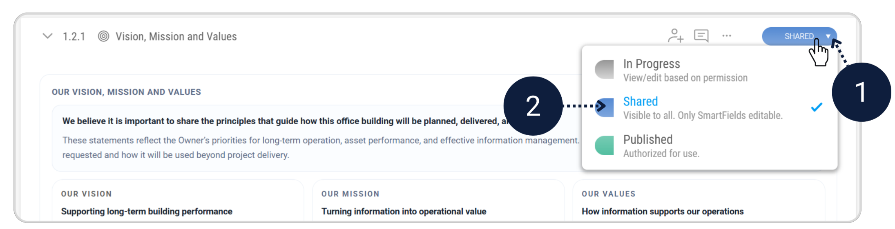
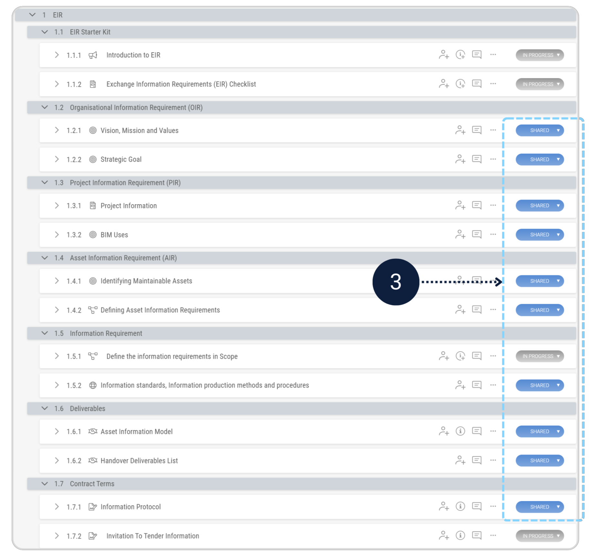
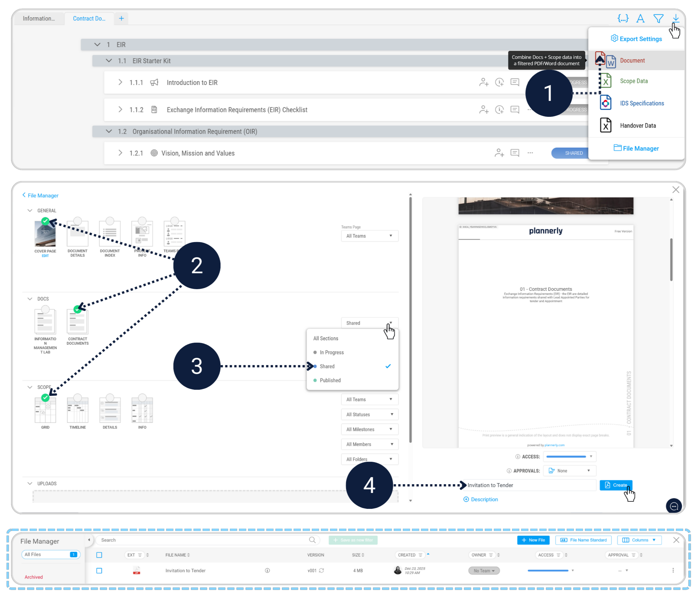

Tender Package
Module - Docs & File ManagerAll Appointed Parties shall read, understand and agree to the requirements of the EIR as it is cascaded down through the whole project supply chain.
- Set all tender-relevant EIR sections to Shared.
- Invitation to tender document in the File Manager.
Before exporting the Invitation to Tender document, review the EIR structure and confirm which sections are to be included in the tender package.
Update the status of all relevant sections from In Progress to Shared. Only sections marked as Shared will be included in the exported tender document.
 Export your completed EIR document, including the defined scope, as a single document in the file manager.
With the EIR finalised and the Invitation to Tender document uploaded, you’re ready to move into the next stage of the workflow.
Click the below to continue with Task 2, where you’ll develop the BEP based on this EIR.